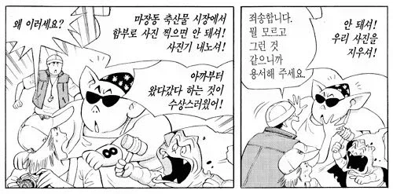

https://bbs.ruliweb.com/best/board/300143/read/77106355

도축업자들을 만화에서 묘사해야 하는데
이분들이 자기 얼굴 팔리면 자식들한테 피해간다고
극구 반대하심
결국 저팔계랑 사오정이 찬조출연함
???: 아니 그럼 저팔계랑 사오정 저작권은 괜찮은 거냐!
ㅇㅇ 저분이 원작가임
https://bbs.ruliweb.com/best/board/300143/read/77106355

도축업자들을 만화에서 묘사해야 하는데
이분들이 자기 얼굴 팔리면 자식들한테 피해간다고
극구 반대하심
결국 저팔계랑 사오정이 찬조출연함
???: 아니 그럼 저팔계랑 사오정 저작권은 괜찮은 거냐!
ㅇㅇ 저분이 원작가임
정주민족이면 국가 문화권 막론하고 도축업의 인식은 좋지 않음
하긴 생선장사한다고 아이들 놀림 받던 시대였으니
식객 에피소드 중에 아버지가 도축업 한다고 파혼까지 간 내용도 있음.
고기 파티다!!
피의 연회다!!
마교 만세 만만세!!!
저게 그 에피소드일걸?
지금도 천대받는데 뭐 200년후에서 옴??
지금도 크게 다르진 않은데
그럼 그냥 안 닮은 사람으로 그리면 되지 굳이 왜
그렇다고 자기 만화에 저팔계 사오정을 출연시킬 기회를 그냥 버려?
무의식 중에 어디라도 비슷하게 그릴 가능성 vs 저팔계, 사오정 우정출연
닥후지 ㅋㅋㅋㅋㅋㅋㅋㅋㅋㅋㅋ
안닮은 사람으로 그리더라도 자료조사로 사진을 찍는다는 생각은 안해?
사진 못 찍게 하더라 -> 그래서 저팔계 사오정으로 그렸다 -> 그럼 안 닮은 사람으로 그리면 되지 굳이(저팔계 사오정으로)
사진 찍는걸 뭐라고 한게 아니잖아
이 맥락이 어려워?
ㅇㅇ 이해하는데 저사람들은 자기 얼굴을 그리던 말던 "사진" 그 자체로 찍히는걸 싫어한다고.
어찌됬건 자신들이 박제되는거잖아. 만화에도 나오잖아? 함부로 찍으면 안된다고 나오는거고. 이 맥락을 이해못해?
원작이 뭘 알아!
ㅁㅊ 허영만이 슈퍼보드 원작가인거 지금알았음
시발 ㅋㅋㅋㅋㅋ 나도 처음 알았음 ㅋㅋㅋㅋㅋㅋㅋ
??? : 원작자에게 허락은 받으신거냐고요 ㅋㅋㅋ
나도 ㅋㅋ
각시탈 원작자인건 알았음?
그.. 삼촌 수산시장 촬영 불법인거 알죠?
소래바닥에서 핸드폰 깨버려도 말 못해요
슈퍼보드 원작작화로 거의 처음보는거 같은데 존나 잘그리네
원작자와 개인적인 대화 끝에 합의했습니다
고기 다루는 장면에 저팔계를 캐스팅한 건 좀 잔인한 거 아니냐 ㅋㅋㅋ
모자이크하고 인터뷰한 아조씨 생각나네...
손형은 저리 비키셩
저 뒤에 미스타손 지나가는거 그렸으면 딱인데ㅋㅋㅋㅋㅋ아
저때는 도축업이 천대 받던 직업인가???
백정의 영향인가???